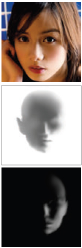

This web page contain relightings of paintings and drawings using the method
proposed in our paper. Click on images to enlarge.
Comparing normal maps generated by our method, SIRFS[1], and CrazyBump[2].
Comparing albedos recovered by our method and SIRFS[1]. We do not claim that our method performs intrinsic-image decomposition, but our albedos are slightly more coherent in the case of paintings that are far from photorealistics.
|
 (a) Reference templates used by Chen et al.'s technique. |
|
Comparing relighting results generated by Chen et al.'s technique[3] and by our method. In (a), the reference image along with the light and shadow templates (drawn by artists) used by Chen et al.'s technique to relight a drawing (top), by David Hajari, and a painting (bottom), by Judy Wise. Note that, while their method requires templates drawn by professional artists, our provides greater flexibility, being able to relight the image as the user's desire. In addition, our results exhibit smoother shadings and more coherent colors, specially on shadow areas.
Comparing relighting results of our method against the one proposed by Barron and Malik, and the commercial software PortraitPro.
{kind=link}